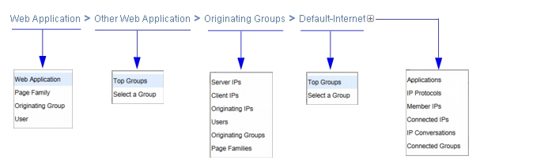

Breadcrumbs Breadcrumbs provide an easy way to navigate through your data. You can use the breadcrumb links at the top of the tabbed page to jump to a different set of data in just a few clicks. Figure 3 Breadcrumbs for View Page Most tables also include breadcrumbs. You can use these to navigate across all drilldowns for the highest-level data type. If the rightmost group has additional drilldowns, a ‘+’ button appears on the right. Some breadcrumbs allow you to drill down to the top X groups or to select a specific set of groups. Figure 4 Breadcrumbs for Table (with Link Menus and Drilldown Button) 